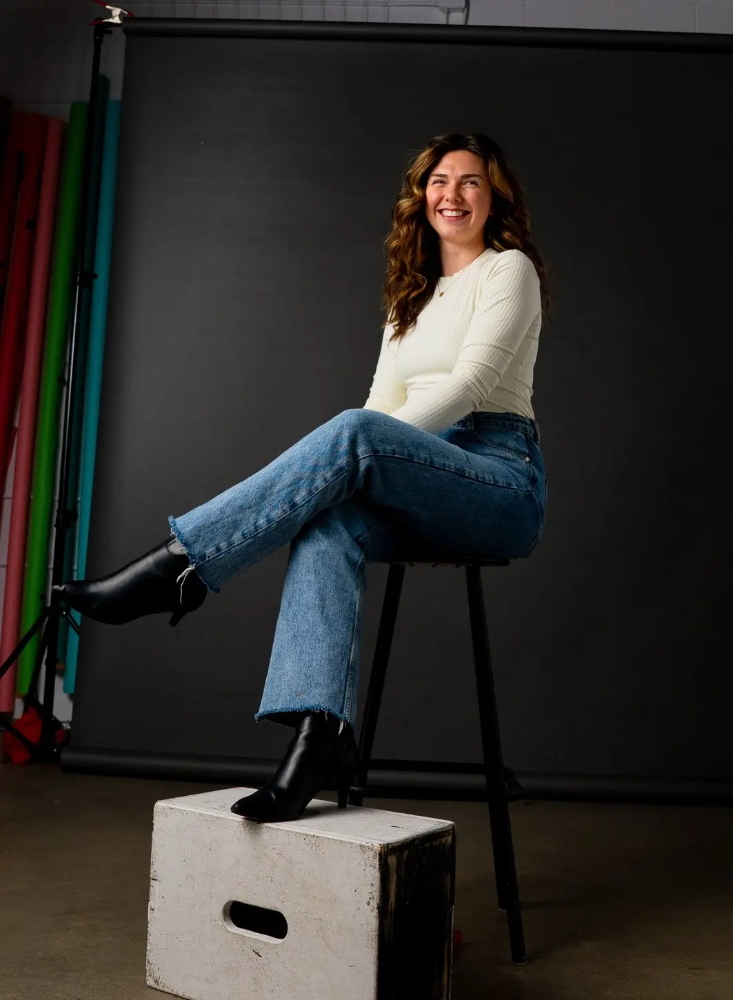

Adventures in Consciousness
Jack Heynen
An educational YouTube series on consciousness in everyday life.
See the projectA strategic and creative partner in Ottawa: messaging, strategy and creative direction, with a custom team for every idea.
Book a discovery callMany people come to us with the idea, and maybe the end point. The middle is where it gets lost.
We help you connect to your own business, your purpose or your energy within an idea. Then we build the strategy, and bring in the right people to make it real.
Get clear on what you offer, who it’s for and how to say it.
MorePlan the shoot, build the crew and keep it on track.
MoreBring the half-formed idea. We’ll help turn it into a real project.
MoreMonthly support that keeps your accounts consistent.
MoreJack Heynen
An educational YouTube series on consciousness in everyday life.
See the projectAutism Workforce Solutions
A podcast we build and run for Autism Workforce Solutions.
See the project
Allie Crawford leads every project. For each one, we bring in the people it needs: a videographer, an editor, a designer. Every job is different, so every team is too.
How we work